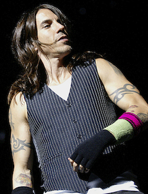
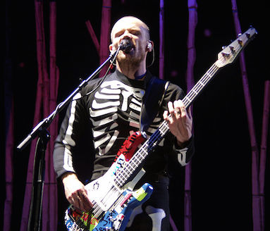
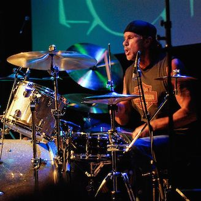
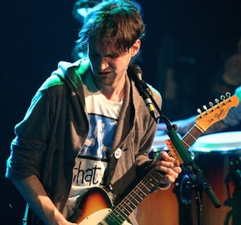

The Band

Joey Smith – Rhythm Guitar and Backing Vocals
Rhythm guitarist Joey Smith met lead guitarist Billy Smith in middle school during the early 1990’s and soon the two became great friends and played to CDs of their favorite bands. Joey Smith would often raid his father’s eclectic CD collection and discovered heavy metal, progressive rock, new wave, ambient, jam bands, and reggae. Joey is a native of Charlottesville and grew up in the same neighborhood as drummer Spikey Smith and future bassist Lenny Smith. Joey’s musical influences remained eclectic throughout his childhood and he often blended many styles together in his own playing. Billy Smith was right there beside Joey as the two began to develop their own style of playing. Along with drummer Spikey Smith and bassist Lenny Smith, Joey and Billy formed many versions of the band before they became The Johnny Smiths.

Billy Smith – Lead Guitar and Vocals
Lead guitarists and singer Billy Smith met rhythm guitarist Joey Smith in middle school during the early 1990’s and was influenced greatly by Joey’s taste in music. The two had played in several bands before hooking up with drummer Spikey Smith and bassist Lenny Smith in the mid 1990’s. Billy is a native of Lambertville and moved to Charlottesville when he was 5 years old. His father bought him a cheap Hondo electric guitar for his 8th birthday. After playing the Hondo for two years, the guitar neck began to warp and it became unplayable. That was about the time when Billy met Joey Smith in his middle school woodshop class. The two talked about guitars whenever they saw each other in woodshop class and decided one day to ask if the shop teacher if could help them fix the neck of the Hondo guitar. They were able to straighten the neck and make the guitar playable again. Billy still uses the Hondo guitar on tour during a few songs.

Spikey Smith – Drums
Drummer Spikey Smith is a native of Charlottesville and grew up a few streets away from Joey Smith. Their older sisters were good friends, which helped the future band mates to meet a few times during the late 1980’s. Spikey began playing drums in elementary school with the help of music teacher, Mr. Vidivich, who accomplished drummer of the 1960’s psychedelic band, The Spartan Trees. Mr. Vidivich had a great influence on Spikey’s musical development. Although they two knew each other through their sister’s friendship, they really never hung out in middle school. Joey and Spikey would not formally become friends until their sisters had a party at Joey’s house. During that party, Spikey and Joey hung out and realized that they had a very similar taste in music. They also found out that each other played different instruments and planned to jam during a future meeting with friend Joey Smith. A little known secret is that Joey used to date Spikey’s younger sister, Bethany Smith in high school.

Lenny Smith - Bass and Backing Vocals
Bassist Lenny Smith is actually Spikey Smith’s twin brother. Lenny began playing guitar in elementary school where
Mr. Vidivich encouraged him to pick up the bass guitar to accompany his older brother Spikey. Around the same time that Spikey met Joey Smith, Lenny had already been influenced by his brother’s musical taste. The brothers are often compared to the Panozzo brothers from the band Styx, since one brother played bass and the other played drums. Lenny is often asked about this comparison and is very flattered because he feels that the Panozzo brothers were an exceptional backbone of the band Styx. Lenny was also influenced by Mr. Vidivich’s band, the Spartan Trees. He then moved onto influences like Pink Floyd and other psychedelic bands such as The Jimi Hendricks’s Experience. Later he discovered Lemmy Kilmister of Motorhead and Geddy Lee of Rush.